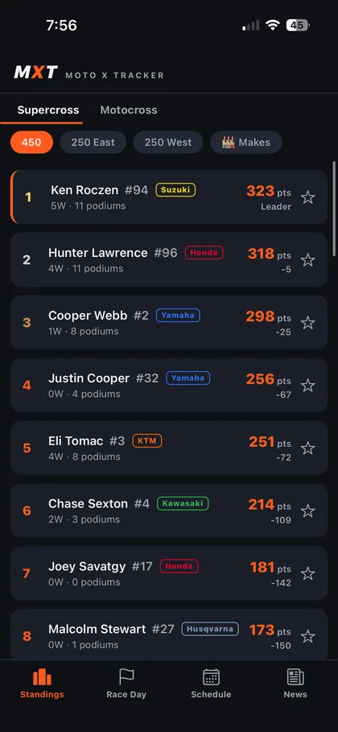
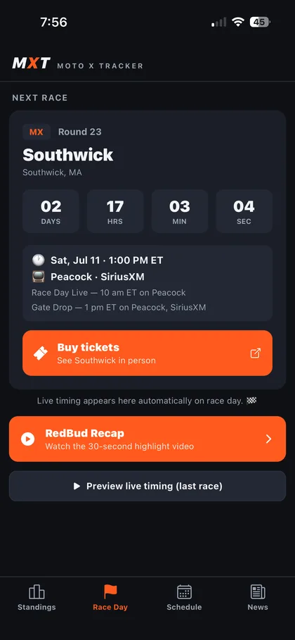
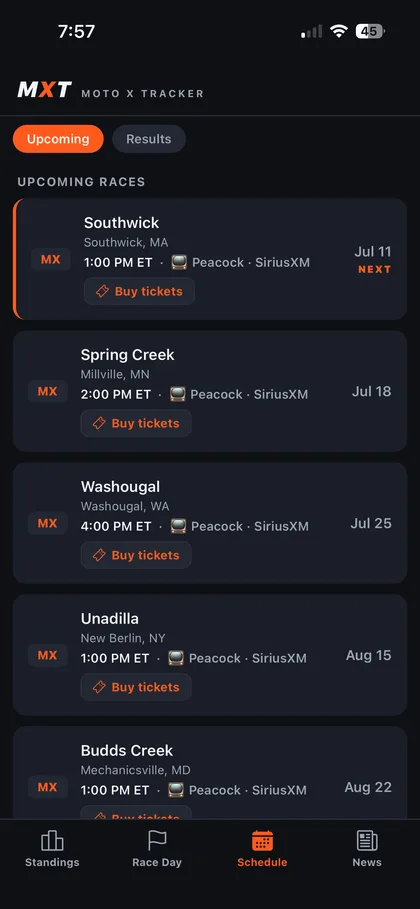

Live timing on your lock screen. Every standing, every rider, every session — Supercross, Pro Motocross, the SMX Playoffs, and the only app with the Women's Championship. Free. No account. No paywall.



The running order appears on your lock screen and Dynamic Island when a race goes live — updating every few seconds through Apple push, no app-opening required.
Positions, gaps, laps, position arrows, purple fastest laps — and tap any rider for sector-by-sector splits.
Walk qualifying → motos → the Overall in one strip, with track maps, entry lists, and the live race-control feed: flags, lead changes, holeshots.
450, 250 East & West, manufacturers — and the only app anywhere with WMX Women's Championship standings.
Star riders to follow them. Podium alerts, breaking news, gate-drop reminders, championship swings — tuned rider-by-rider.
The Rundown catches you up on the season in 30 seconds, and Motocross 101 explains SX vs MX vs SMX like a friend would.
Everything above — widgets, live activities, full standings, alerts — free. Your favorites live on your phone, not our servers. We collect nothing.
A recap video and story cards generate themselves after every round, with weather, broadcast info and tickets for the next one.
Next-race countdown and the championship top five, right on your home screen.